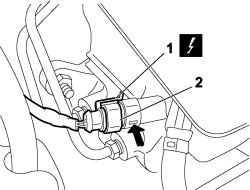

3330C44 BRAKE FLUID MINIMUM W/L SWITCH - R + R
- Path
- Procedures > 33 BRAKES > 3330 HYDRAULIC BRAKE SYSTEM > 3330C BRAKE PUMP, RESERVOIR AND LOAD PROPORTIONING VALVE > 3330C44 BRAKE FLUID MINIMUM W/L SWITCH - R + R
- Kind
- repair procedure (removal / refitting; the operation number is the code)
- Applies to
- engines: 1.4 8v, 1.6 16v, 1.3 JTD 16V, 1.9 JTD 8V; all production periods
- Interactive page
- https://sloeber94.github.io/elrnDB-fDbl/en/#/223000142
Applies to: engines: 1.4 8v, 1.6 16v, 1.3 JTD 16V, 1.9 JTD 8V; production: da 12/03; only with equipment: MY 2005
 Removing
Removing
 Refitting
RefittingTurn the ignition key to the OFF position.
Disconnect the negative battery terminal.
Description | Connector | |
|---|---|---|
- | BATTERY |
1. Disconnect the electrical connection from the brake fluid minimum warning light switch.
Description | Connector | |
|---|---|---|
1 | BRAKE FLUID LEVEL SENSOR (SWITCH) |
2. Compress the spring at the point indicated in the figure and simultaneously remove the minimum brake fluid warning light switch from the reservoir.

Applies to: engines: 1.4 8v, 1.6 16v, 1.3 JTD 16V, 1.9 JTD 8V; production: da 12/03; only with equipment: MY 2005
Refitting
RemovingRefit the brake fluid minimum warning light switch, ensuring that it is locked by means of the retaining clip and connect the electrical connection.
Description | Connector | |
|---|---|---|
- | BRAKE FLUID LEVEL SENSOR (SWITCH) |
Connect the negative battery terminal.
Description | Connector | |
|---|---|---|
- | BATTERY |